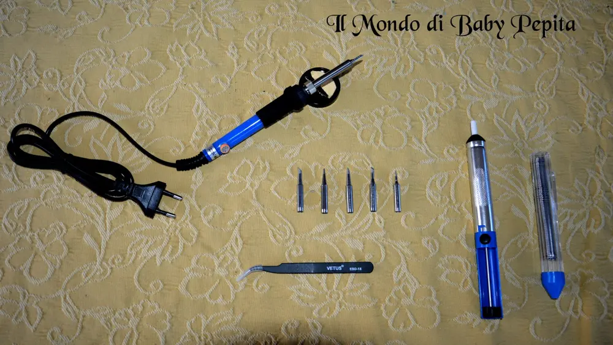
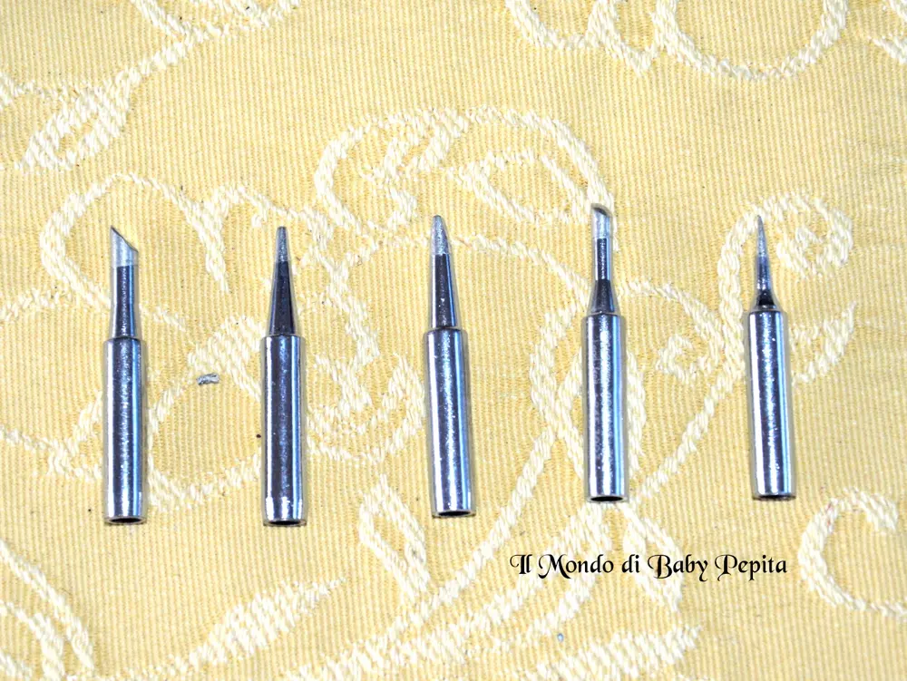
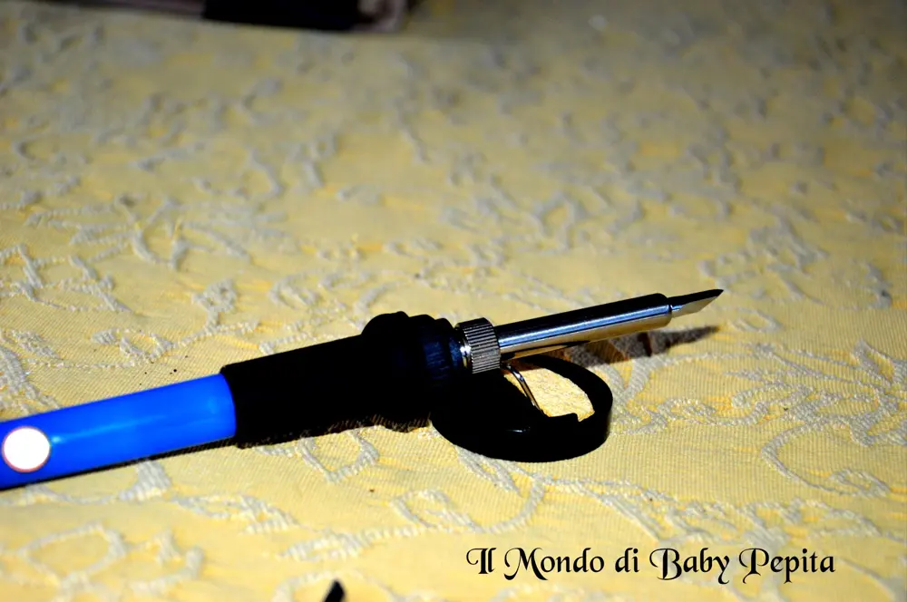
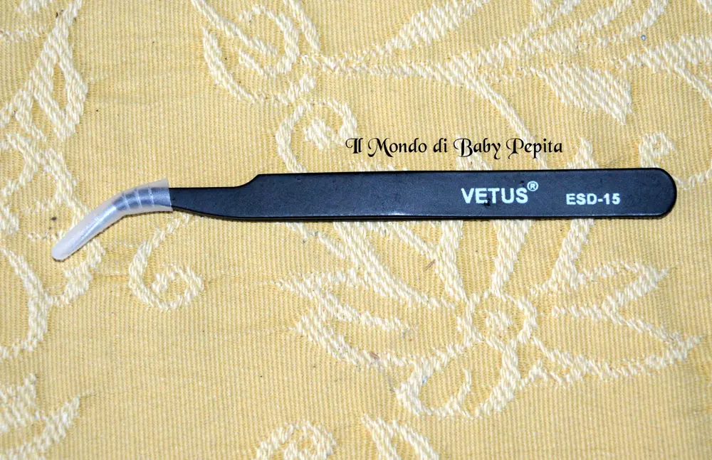
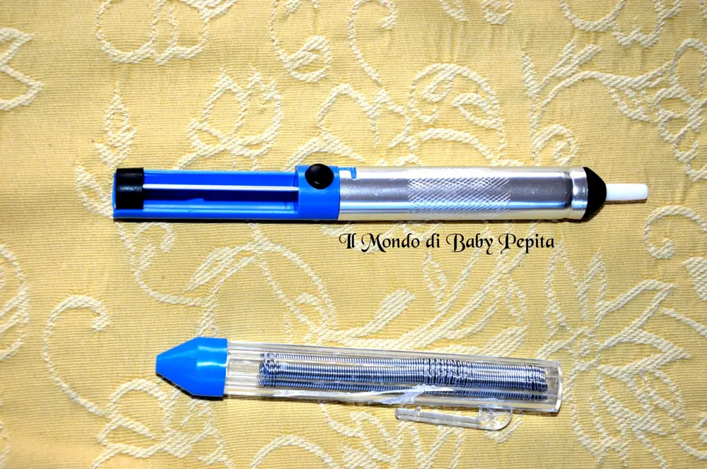
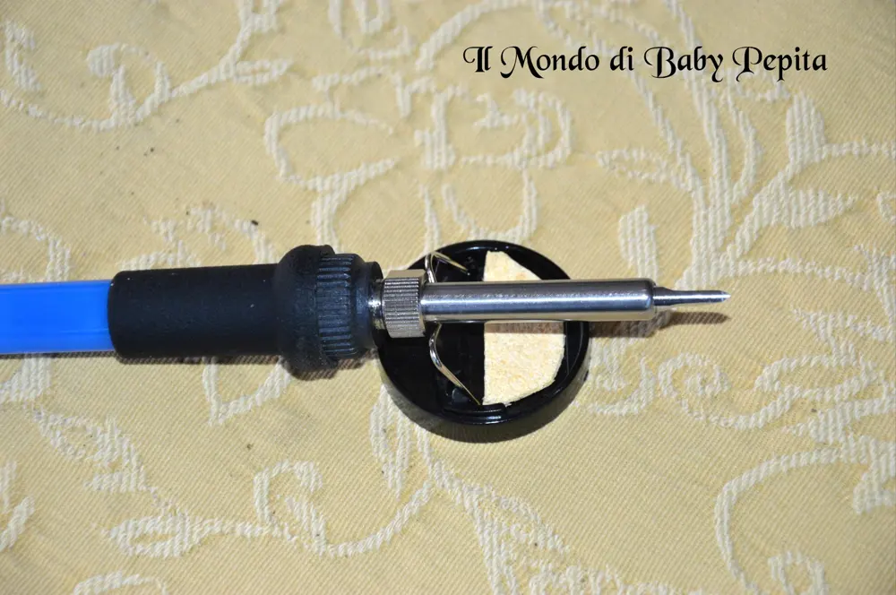

top2013888 - Saldatore con 5 Pezzi per computer e cellulari
 Torniamo a parlare di Amazon e stavolta un prodotto tutto maschile. .
Torniamo a parlare di Amazon e stavolta un prodotto tutto maschile. .  Un saldatore di precisione per computer e cellulari.Il venditore top2013888 mi ha gentilmente inviato tutto il kit per testarne l'efficacia.
Un saldatore di precisione per computer e cellulari.Il venditore top2013888 mi ha gentilmente inviato tutto il kit per testarne l'efficacia.

Partiamo direttamente con l'elenco dei pezzi in dotazione del kit:
- 1 penna saldatrice ferro
- 1 pompa dissaldante
- 5 punte di diversa forma e funzione
- 1 pinzette antistatiche
- 1 filo per poter saldare

La "Penna Saldatrice" ha veramente un'ottima efficienza di dissipazione di calore: con questa struttura si ha la possibilità di avere una massima dissipazione del calore!

La penna si riesce a riscaldare molto velocemente e raggiunge una temperatura tra 200-450 °C (regolabile tramite un indicatore posizionato alla coda della penna).Riscalda velocemente non c'è un tasto di spegnimento quindi bisogna togliere la spina e attendere un bel pò prima che si raffreddi.
Pratica anche la succhia-stagno a molla per rimuovere il materiale in eccesso e favorire l'estrazione di componenti guasti.

Viene inoltre fornito anche un sostegno per appoggiare il saldatore e pulirne la punta sulla classica spugnetta da inumidire.

Ottimo prodotto qualità - prezzo soprattutto per chi è pratico di informatica, non ho problemi a dire che è un accessorio che ho fatto testare a mio cognato che lavoro giustappunto con i computer e li assembla, quindi chi meglio di lui poteva recensire un prodotto così?Insomma direi che è un prodotto che consiglio di acquistare anche per chi si diletta in casa a maneggiare fili e aggeggi del genere.Prezzo: 15,99 €+ 2,99 € di spedizioneSe volete acquistarlo il link è QUI
Per me seguitemi:FACEBOOKINSTAGRAMTWITTER